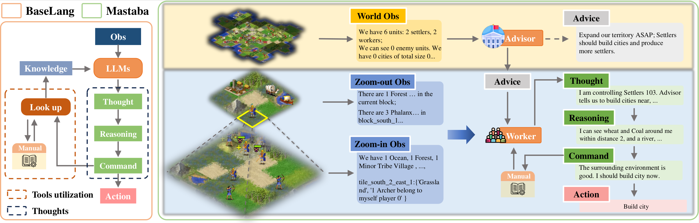

LLM Agent
Welcome to Civrealm LLM Agent！ This documentation will guide you through the process of building LLM agents in CivRealm Environment. We will first provide an overview of CivRealm LLM Env, followed by instruction on how to use the civrealm-llm-baseline repository to build llm agents Mastaba and BaseLang on this environment.
🌏 Civrealm LLM Environment
The Civrealm LLM Environment is a LLM environment wrapped upon Civrealm Base Env specifically designed for building LLM agents. This environment
- provides observations of each actor in natural language
- provides valid actions of each actor in natural language
- restricts valid actions in order to reduce meaningless actions
- executes actions described by natural language
Besides, a LLM wrapper is open to customize your own environment.
Quick Start
Start a single FreecivLLM environment :
env = gymnasium.make('civrealm/FreecivLLM-v0')
obs, info = env.reset(client_port=fc_args['client_port'])
Use LLM Wrapper to customize an environment :
env = gymnasium.make('civrealm/FreecivBase-v0')
env = LLMWrapper(env)
obs, info = env.reset(client_port=fc_args['client_port'])
LLM Info
Observations and actions in natural language are stored in llm_info as:
llm_info is a Dict consisting of 6 subspaces with keys "player", "city", tech", "unit", "dipl", and "gov". Subspace of "unit" is a Dict with keys of unit_id, and subspace of "city" is a Dict with keys of city_id, describing "name", "available_actions", and local "observations" of the corresponding unit and city. Subspaces of "player", tech", "dipl", and "gov" are currently empty, and will be completed in the future, meaning that LLM Env only support controlling units and cities by natural language at this stage.
Read llm_info of "unit 121" by:
Choose an existing unit or city
You should read llm_info of an currently existing unit or city
Observation
Read observations of "unit 121" by:
Action
Read valid action of "unit 121" by:
🤖 Architecture of BaseLang and Mastaba

BaseLang
BaseLang consists of three components: observation, reasoning, and commands. For observation, a 5 * 5 tile-based observation is employed, centered on each unit's location, optimizing tactical information provision while accommodating strategic depth. The reasoning module mimics AutoGPT and outputs in three stages: thought, reasoning, and command. Commands empower the agent with the choice between "manual and history search" and "final decision" commands, enabling data retrieval from a vector database or selecting available actions to execute based on environmental and historical context. Finally, individual LLMs are assigned to each unit, with their context histories, to facilitate detailed planning.
Mastaba
To facilitate cooperation between independent entities, Mastaba introduces a hierarchical structure, organizing LLM workers, observations, and decision-making into a pyramid-like structure.
LLM Workers. Within Mastaba, LLM workers are structured as two layers. At the pinnacle is the "advisor", tasked with overseeing all other LLM workers. The advisor monitors the holistic nationwide perspective, including unit counts, city metrics, and enemy player information. At the operational level, Mastaba maintains LLM workers that resemble BaseLang's structure.
Observation. Mastaba adopts a pyramid-like map view, condensing data from a 15 * 15 tile region into 9 blocks, each spanning 5 * 5 tiles. This design enables entities to grasp information within a broader range while managing prompt loads effectively, thereby elevating map awareness.
Decision-making. Mastaba's decision-making workflow follows its agent structure. The advisor initiates each turn with a nationwide assessment, encompassing cities, units, and potential threats. It generates suggestions during each turn and communicates them to other LLM workers, who independently select actions for their entities. Additionally, workers possess the capability to query a vector database for knowledge, enabling informed decisions based on manual or stored experiences.
🏃 Using civrealm-llm-baseline Repository
The civrelam-llm-baseline repository is a collection of code and utilities that provide a baseline implementation for building llm agents. It includes two agents: Mastaba and BaseLang, in the Civrealm LLM Environment.
🏌️ Getting Started
To get started, follow these steps:
-
Clone the civrealm-llm-baseline repository from GitHub and enter the directory:
-
Set environment variables. The following groups are independent. Set only one group and use that group. OpenAI GPT is preferred.
# Group 1 export OPENAI_API_TYPE=<api-type> # e.g. 'azure' export OPENAI_API_VERSION='<openai-api-version>' export OPENAI_API_BASE=<openai-api-base> # e.g. 'https://xxx.openai.azure.com' export OPENAI_API_KEY=<openai-api-key> export DEPLOYMENT_NAME=<deployment-name> # e.g. 'gpt-35-turbo-16k' -
Install the required dependencies by running:
-
Run Mastaba
Switch Agents
Choose BaseLang agent:
import gymnasium
from agents import BaseLangAgent
from civrealm.freeciv.utils.freeciv_logging import fc_logger
def main():
env = gymnasium.make('civrealm/FreecivLLM-v0')
agent = BaseLangAgent()
observations, info = env.reset()
done = False
step = 0
while not done:
try:
action = agent.act(observations, info)
observations, reward, terminated, truncated, info = env.step(
action)
done = terminated or truncated
step += 1
print(
f'Step: {step}, Turn: {info["turn"]}, Reward: {reward}, Terminated: {terminated}, '
f'Truncated: {truncated}, action: {action}')
except Exception as e:
fc_logger.error(repr(e))
raise e
env.close()
if __name__ == '__main__':
main()
Choose Mastaba agent:
import gymnasium
from agents import MastabaAgent
from civrealm.freeciv.utils.freeciv_logging import fc_logger
def main():
env = gymnasium.make('civrealm/FreecivLLM-v0')
agent = MastabaAgent(max_deconflict_depth=3)
observations, info = env.reset()
done = False
step = 0
while not done:
try:
action = agent.act(observations, info)
observations, reward, terminated, truncated, info = env.step(
action)
done = terminated or truncated
step += 1
print(
f'Step: {step}, Turn: {info["turn"]}, Reward: {reward}, Terminated: {terminated}, '
f'Truncated: {truncated}, action: {action}')
except Exception as e:
fc_logger.error(repr(e))
raise e
env.close()
if __name__ == '__main__':
main()
Customize Env by LLM Wrapper
You can also make a LLM Env by LLM Wrapper
Conclusion
In this guide, we introduced the CivRealm LLM Environment and explained how to use the civrealm-llm-baseline repository to build llm agents on this environment. We encourage you to experiment with different LLM frameworks to further enhance your agent's performance.